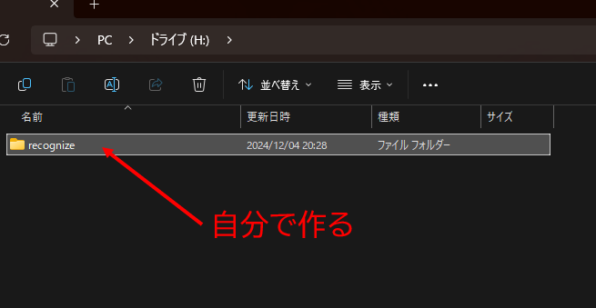
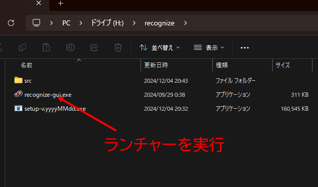
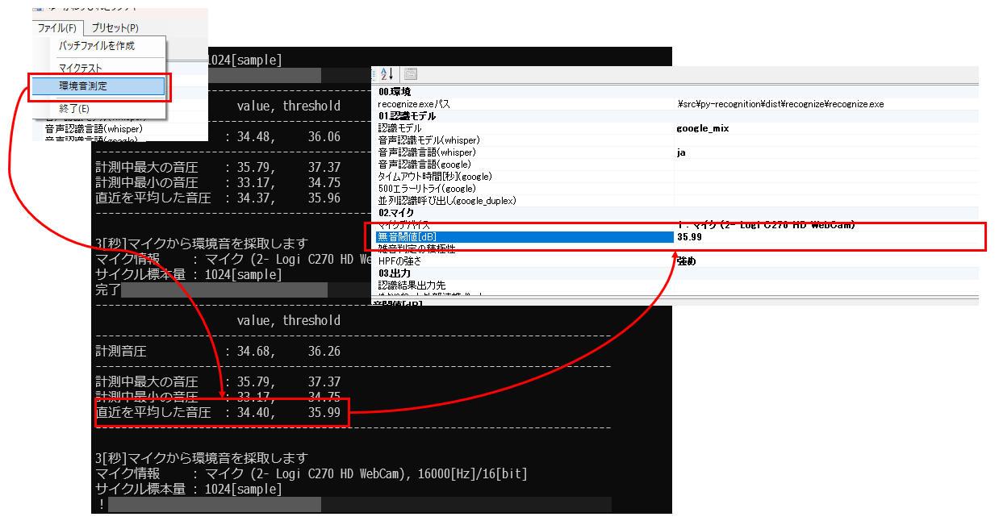

ゆかりねっと-Yukarinette-の音声認識エンジンを別処理で認識させるためのツールです。
Windows10/11 x64で動作
各種説明は上のタブから
まず見て！
構成比較
ゆかりねっと通常使用時
ゆかりねっと通常使用時は以下のようにchromeを通してgoogleから音声認識結果を取得します。（③の箇所）
この音声認識結果を取得する際にgoogleが応答を返さないケースがあり、これが俗に言う認識詰まりです。

ゆーかねすぴれこ（google）使用時
基本の流れは通常使用と同じですがchromeを経由しません。
chromeには無いゆーかねすぴれこの様々なパラメータを使うことにより詰まりを減らすことが出来ます。
ゆーかねすぴれこ（kotoba_whisper）使用時
googleに任せていた音声認識結果をkotoba_whisperに任せます。(②と③の箇所)
内部処理なので詰まることはありませんがgoogleとまた違った認識結果になったり、誤認識が発生する場合があります。
またGPUパワーも使います。

簡単スタート
セットアップ！
新規インストール
任意のドライブの浅い場所に好きなフォルダを作ります。
※ 日本語が含まれるパス、フォルダに置くとGUIが起動しません。必ず英数字のみのパス、フォルダに配置してください。
例)
OK → K:\tool\recognize
NG → K:\ツール\recognize

作成したフォルダにダウンロードしたsetup-*.exeを移動します

setup-*.exeを実行するとコンポーネントがダウンロードされゆーかねすぴれこが構成されます

結構時間かかる…！

セットアップは完了したのでランチャーを起動します
更新インストール
導入時に作成したフォルダにダウンロードしたsetup-*.exeを移動します
setup-*.exeを実行するとコンポーネントがダウンロードされゆーかねすぴれこが更新されます
認識する準備！
recognize-gui.exeをダブルクリックで実行します。
プリセットから簡易設定を行いましょう。
※whisperを実用的に使うにはPCにNVIDIAのGPUが搭載されている必要があります
[ゆかりねっと限定]外部連携の設定！

※ゆかコネNEOは自動で連携するので通常必要ありません
マイクの調整！
マイクデバイスの選択！
マイクデバイスをプルダウンすると接続されている入力デバイスの一覧が並ぶので使っているものを選択します。
このデバイスは出力含むサウンドデバイスに変更があると順序が変わり再度選択する必要があるのでDACなど抜き差ししている人は特に注意してください！

環境音の測定！
メニューから環境音の測定を実施します。このときしゃべらず結果が出るのを待ってください。環境音測定画面に環境音から計算した閾値が出ているのでそれを画面に入力します。
そして認識テスト！
メニューからマイクテストを実施します。

どうですか？しゃべり終わったタイミングで認識が終了しましたか？認識できる声量が出ているとインジケータの色が緑色にそして声を認識すると水色に変化します。緑色に変わらない場合は閾値を水色に変わらない場合はノイズがうるさすぎる可能性があります。Windowsのマイクボリュームを見直してください。

どういう音が認識しているか確認したい場合カテゴリそのほかにある[録音]をTrueにしてテストを実行すると認識した音声データをwavファイルを保存します。これを聞いて無駄がないか確認しましょう！
※ このオプションはゆかりねっと連携時も有効でwavで保存するので必要ない場合はFalseに設定して録音されないようにしましょう

ゆーかねすぴれこで認識してゆかりねっとでしゃべらせる！
これで準備ができたのでいよいよゆかりねっとでボイロ(等)にしゃべらせましょう。
- まずゆかりねっとで認識を開始します
- 起動ボタンをクリックして本体を起動します
- 認識中の表示が出たらなにかしゃべってみます
- それに合わせてボイロがしゃべる…！

どうですか？問題なく動きましたか？設定はここまでです。お疲れさまでした…！
設定は保存されるので次回からは起動ボタンだけでOKですよ！
WIP
FAQ
発話時間とPCMのサイズが一致しません
特定の条件下でPCMデータに無音時間を入れPCMデータを水増しします。
これは冒頭および末尾すぐの音が認識されにくいための処置です。
フェードデータが挿入されている場合ログレベル2以上で「末尾0.25s挿入」などが表示されます。
認識モデルのgoogle、google_duplex、google_mixは何が違いますか？
| speech_recognition実装の移植 | |
| google_duplex | chromium実装の移植 |
| google_mix | googleとgoogle_duplexを併用して認識精度を高めます |
音声認識ランチャーのマイク一覧が出てきませんor音声認識ランチャーが立ち上がってきません
これらはアンチウィルスソフトが悪さをしている可能性があります。
アンチウィルスソフトの除外対象にして再度インストールを行ってみてください。
また、ゆーかねすぴれこをパスの深い階層に置くと起動に失敗する可能性がありますので、
ゆーかねすぴれこを深い階層に置かないようにお願いします。
浅い階層に置いてください。
以下は20250112より前のバージョンでの情報になります。20250112移行のバージョンでは日本語が含まれるフォルダでは起動出来ないようにしました。
日本語が含まれるフォルダに置くと起動に失敗する事象が確認されています。起動に失敗した場合英文字のフォルダ名に変えてみてください。
例えば、「D:\ゆーかねすぴれこ」は起動に失敗します。
英語翻訳して字幕ってどう出せばいいですか
ゆーかねすぴれこで翻訳モデルにkotoba_whisperを指定します。このとき認識モデルはgoogle_mixかkotoba_whisperにしてください。
OBSの設定でWebソケットを有効にします。ポートとパスワードをメモしてください(a)。
OBSのソースに字幕用のテキストを追加します(b)。
ゆーかねすぴれこの字幕設定で字幕連携をobsWebソケット設定に、(a)でメモしたポートとパスワードをコピーします。英語字幕ソースに(b)で作成したテキストの名前を設定します。
これで完了です。
字幕の設定を微調整したい
ゆーかねすぴれこ起動中に字幕のテキストソースを編集するとクラッシュします。(仕様)OBSの設定で一度Webソケットを停止してテキストソースの設定を編集してください。再度Webソケットを有効にすればゆーかねすぴれこは再接続します。